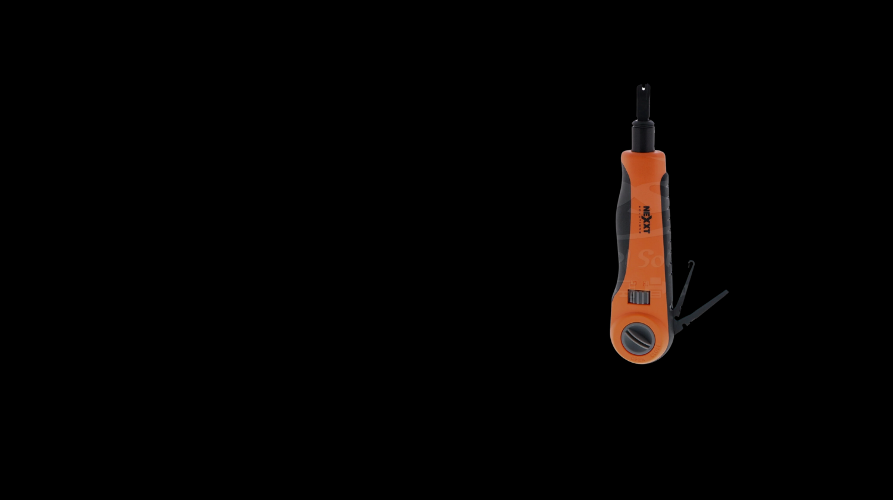
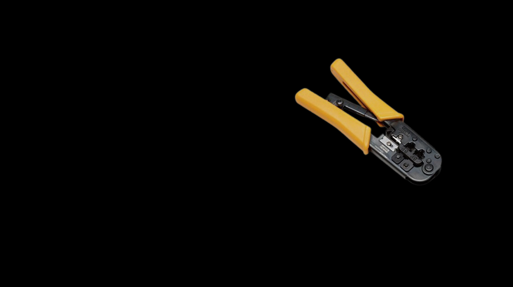
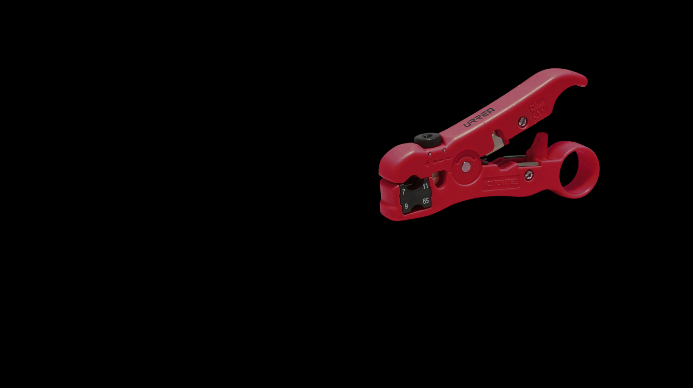
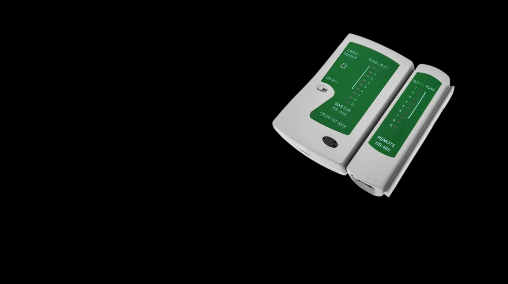
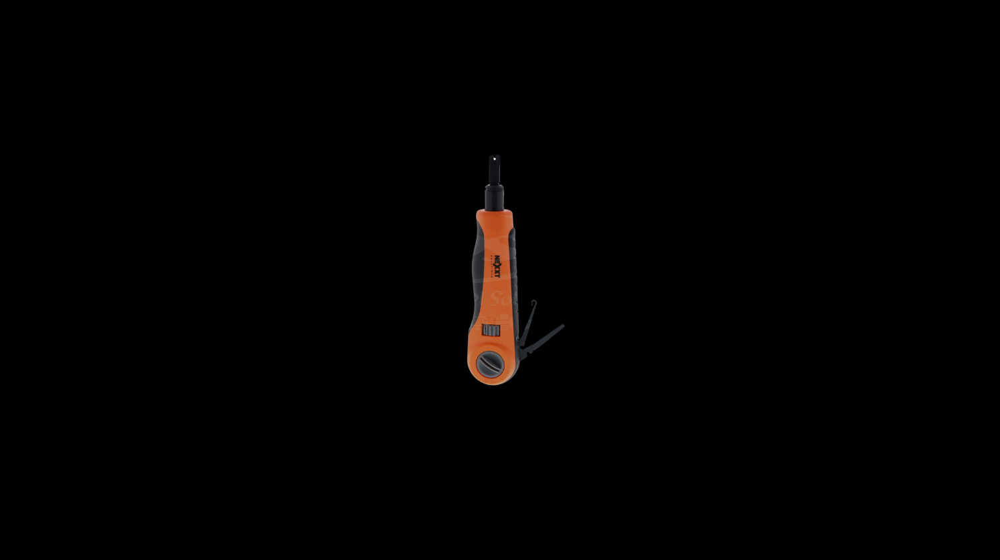
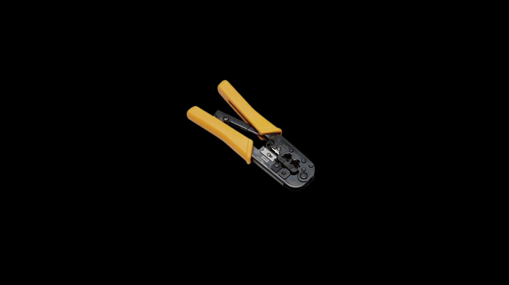
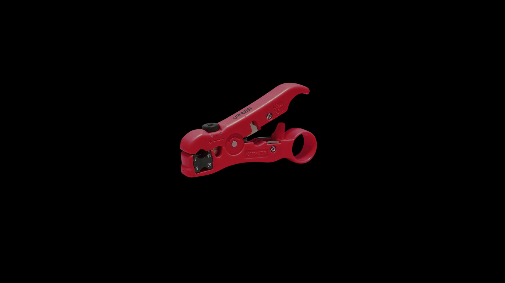
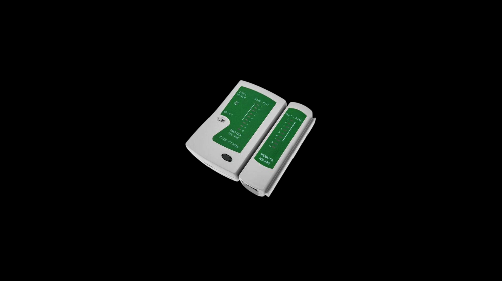

Componentes pasivos
Componentes activos
Componentes pasivos y activos
Herramientas
Cableado
Tipos de Cables

PONCHADORA
¿PARA QUE SE UTILIZA?
Se utiliza para insertar cables en conectores RJ45 o RJ11.

CRIMPADORA
¿PARA QUE SE UTILIZA?
Sirve para fijar conectores en los extremos de los cables.

DESFORRADORA
¿PARA QUE SE UTILIZA?
Permite quitar la cubierta exterior de los cables.

TESTER
¿PARA QUE SE UTILIZA?
Verifica la continuidad y la correcta conexión de los cables de red.

Ponchadora

Crimpadora

Desforradora

Tester
<
>